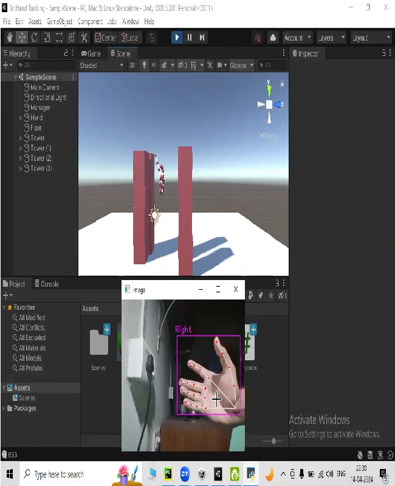

Projects
Created Story on 120 Years of Olympic History on Tableau
Developed comprehensive Tableau visualization of 120 years of Olympic history. Highlighted key events, medal counts, and participating countries. Utilized data analytics techniques for insightful presentation.

Hand Gesture-Based Controls for Virtual Object Interaction
Implementation of hand gesture-based controls for interacting with virtual objects.

An API based NLP application created using Tkinter and OOP
Offers text analysis functionalities through APIs. Users input text and conduct NLP analysis effortlessly.